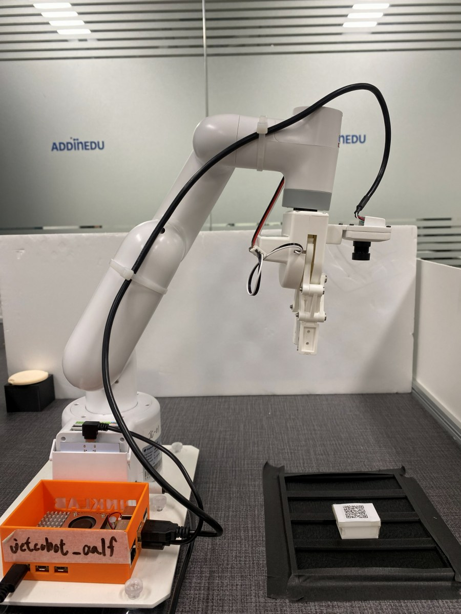
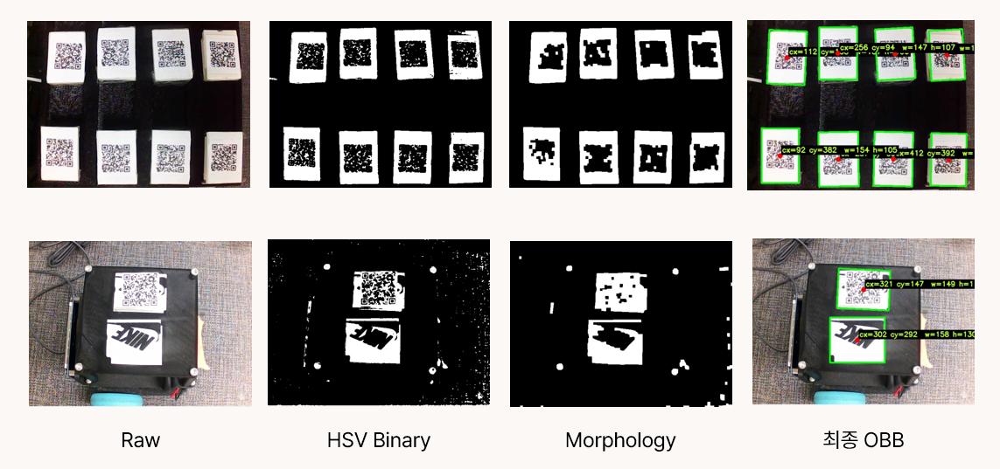

단안 카메라만으로 3D 파지 좌표 복원 — Depth 센서 없이 Hand in Eye 캘리브레이션

협동로봇 + Eye-in-Hand 카메라 + 그리퍼 구성
신발은 브랜드마다 사이즈 체계가 달라 실제로 신어보지 않으면 맞는지 알기 어렵습니다.
온라인 구매의 반품률이 높은 근본적인 이유입니다.
그렇다고 매장을 방문하면 직원의 응대가 부담스러워 자유롭게 신어보기 어렵다는 불편함도 있습니다.
이 두 문제를 동시에 해결하기 위해 "직원 눈치 없이 마음껏 신어볼 수 있는 반무인 신발 매장"을 목표로 삼았습니다.
AMR과 로봇팔을 연동해 고객이 선택한 신발을 자동으로 가져다주는 자동화 매장 시스템 Moosinsa를 구현했습니다.
Depth 카메라 없이 2D 단안 RGB 카메라만으로 임의 위치·각도로 놓인 신발 박스를 인식하고 파지 좌표를 계산해 자율적으로 Pick & Place를 수행하는 비전 파이프라인 구축.
| 담당 영역 | 내용 |
|---|---|
| 카메라 캘리브레이션 | Zhang's Method 체커보드 30장, 렌즈 왜곡 보정 |
| Hand-Eye 캘리브레이션 | Tsai-Lenz AX=XB, 25포즈, 카메라↔Flange 변환행렬 도출 |
| OBB 검출 파이프라인 | LAB CLAHE → HSV 마스킹 → Morphology → minAreaRect |
| 3D 좌표 복원 | Ray-Plane Intersection |
| ROS2 아키텍처 설계 | 핵심 로직을 core/로 분리해 ROS2 빌드 없이 Python 스크립트로 바로 실행·검증 가능한 구조 구현 |
| 항목 | 수치 |
|---|---|
| 파지 좌표 오차 | <5 mm |
| Pick & Place 사이클 타임 | 12.62 s |
| 비전 처리 지연 (평균) | 40.4 ms |
Depth 센서 없이 수학적 영상처리만으로 3D Pick & Place를 구현해 하드웨어 비용 절감과
경량 시스템 구성 가능성 확인
Ray-Plane Intersection — "상자는 항상 Z_surface 위에 있다"는 물리적 제약 하나가 광선과 평면의 교점을 유일하게 결정합니다.
픽셀 좌표 $(c_x, c_y)$를 카메라 내부 파라미터 $K$로 역투영해 카메라 공간의 단위 광선을 구하고,
Hand-Eye 행렬 $R$로 로봇 베이스 공간으로 변환합니다. 오차 허용 기준 ≤5 mm — 그리퍼 파지 폭(약 40 mm)의 1/8 이내면 파지에 영향 없다는 오차 예산으로 설정. 트레이드오프: 물체가 평면 위에 있다는 도메인
가정 필요. AX = XB (Tsai-Lenz), 25포즈, Hand-Eye RMS 오차 1.245 mm.
로봇이 자세를 바꿀 때마다 Flange 기준 변환 $A_i$와 카메라 기준 변환 $B_i$를 쌍으로 수집합니다.
두 변환은 구하려는 Hand-Eye 행렬 $X$에 대해 아래 관계를 만족하며,
25쌍의 방정식을 Tsai-Lenz 알고리즘으로 연립해 $X$를 추정합니다.
$$A_i X = X B_i \quad (i = 1, \dots, 25)$$
$$X = T_{\text{flange} \to \text{cam}} \quad \text{(카메라가 Flange에 고정된 Eye-in-Hand 구성)}$$
왜 Flange 기준인가: TCP는 그리퍼에 따라 달라지는 가변값. 로봇 이동 중 캡처된 흔들린 프레임으로 OBB를 검출하면 좌표가 틀려 파지 실패로 이어집니다. v1에서는 좌표 변환 코드가 ROS2 노드에 묶여 수정할 때마다 로봇 연결 + ROS2 부팅이 필요했습니다. v2에서 core/Node를 분리했습니다. 흰색 단색 상자 환경에서 딥러닝보다 빠르고 파라미터 조정이 직관적인 OpenCV 파이프라인.  Raw → HSV Binary → Morphology → 최종 OBB 검출 결과 비교 관측 자세 이동 → OBB 검출 → 좌표 변환 → 파지 → 후퇴 전체 사이클 (평균 12.62 s) ① 10회 연속 파지 — OBB 검출 PiP 관측 캠 + OBB 검출 PiP 오버레이, 상자 10회 연속 파지 (4배속) ② AMR 트레이 Pick & Place 상자를 집어 AMR 트레이에 옮기는 전체 사이클 (4배속)
이번 프로젝트는 "로봇에게 눈을 달아준다"는 것이 단순히 카메라를 연결하는 문제가 아님을 알게 해 준 경험이었습니다.
좌표계 변환 하나하나, 캘리브레이션 포즈 수집 방식, 이미지 처리 파이프라인의 각 단계가 서로 맞물려 있어서
한 곳의 오차가 최종 파지 위치에까지 영향을 줬습니다.
그 과정에서 가장 크게 느낀 것은, 좋은 엔지니어링은 문제가 생겼을 때 어디서 틀렸는지 빠르게 찾을 수 있는 구조를 미리 만들어 두는 것이라는 점입니다.
다음 프로젝트에서는 설계 초기부터 각 모듈의 검증 방법을 함께 정의하는 습관을 이어가려 합니다.
기술 상세
제약 조건 → 기술 결정
제약
이유
기술 결정
Depth 카메라 없음
예산 제한, RGB 단안만 사용
Ray-Plane Intersection으로 3D 좌표 복원
단색·직육면체 상자
색상·형태 조건이 단순해 규칙 기반 검출 가능
HSV 이진화 → 윤곽선 추출 →
minAreaRect OBB 검출
팀 공유 로봇
로봇 점유 없이 알고리즘 반복 수정 필요
ROS2 빌드 없이 Python 스크립트로 바로 실행 가능한
core/ 분리① Depth 센서 없이 3D 좌표 복원
# core/coord_transform.py
ray_c = K_inv @ [cx, cy, 1.0]
ray_b = R @ ray_c
t = (z_surface - origin[2]) / ray_b[2]
P = origin + t * ray_b # mm
광선의 파라미터 $t$는 "광선이 테이블 평면 $Z = Z_{surface}$와 만나는 지점"에서 결정되며,
최종 3D 파지 좌표 $P$를 얻습니다.
$$\mathbf{r}_c = K^{-1}\begin{bmatrix}c_x\\c_y\\1\end{bmatrix}, \quad
\mathbf{r}_b = R\,\mathbf{r}_c, \quad
t = \frac{Z_{surface} - o_z}{r_{b,z}}, \quad
P = \mathbf{o} + t\,\mathbf{r}_b$$
② Hand-Eye 캘리브레이션
# 각 자세마다
A_i = T_base2flange # 관절각 → FK
B_i = T_cam2board # solvePnP
# 25쌍 → Tsai-Lenz
X = cv2.calibrateHandEye(TSAI)
Flange는 공구 교체와 무관한 고정점이므로 그리퍼 교체 후에도 재캘리브레이션 불필요.③ 이동 중 프레임 배제
move_to()가 완전히 반환돼 로봇이 완전히 정지한 이후에만 검출 결과를
읽도록 순차 실행으로 보장합니다.# nodes/vision_pick_place_node.py
self._motion.move_to(observe_pose) # blocking
flange = self._motion.get_flange_coords() # Flange 좌표
self._transformer.update_pose(flange) # T_base2cam 재계산
obb = self._detector.wait_for_detection(timeout=10.0) # 정지 후 첫 프레임
④ Clean Architecture (v1 → v2)
항목
v1 (ROS2 모놀리식)
v2 (Core/Node 분리)
수정 → 검증
로봇 연결 + ROS2 부팅 (수 분)
python verify.py 단독 (수 초)
단위 테스트
불가 (rclpy 의존)
가능
OBB 검출 파이프라인
단계
내용
① LAB CLAHE
L채널(밝기)에만 CLAHE 적용. 색 정보(A, B) 유지한 채 조명 정규화 → HSV 범위 안정화
② HSV 마스킹
흰색 상자 HSV 범위 inRange. Morphology(CLOSE+OPEN)로 노이즈 제거 및 구멍 메움
③ minAreaRect
최대 면적 윤곽선에서 최소 면적 회전 직사각형 추출 → cx, cy, w, h, θ
문제 해결 2건
면적(10000~20000 px²) · 폭/높이 범위 ·
종횡비(0.4~3.5) · solidity(>0.6).
이동 전 set_bool(False)로 퍼블리시 차단 → 정지 확인 후
set_bool(True)로 재개 → 첫 유효 좌표 수신 → 픽업 전 재차단
Pick & Place 동작 데모
정량 결과
지표
결과
측정 방법
허용 기준
렌즈 왜곡 Reprojection RMS
0.257 px
Zhang's Method, 체커보드 30장
<0.5 px
Hand-Eye 캘리브레이션 잔차
1.245 mm
Tsai-Lenz 캘리브 데이터 기반 잔차
<5.0 mm
파지 좌표 평균 오차
≤5 mm
그리퍼 폭 기준 오차 예산 설정 (verify.py Step B)
<5.0 mm
비전 처리 지연
40.4 ms
--measure-cycle 10회, 초기 로딩 이상치(384.6 ms) 제외 9회 평균
—
Pick & Place 사이클 타임
12.62 s
--measure-cycle 10회
—
향후 개선 방향
#
항목
근거
01
C++ 포팅
Python 런타임 오버헤드로 인해 편차 발생
core/를 Eigen + OpenCV C++로 재작성하면 20 ms 이내 예상.
02
Visual Servoing
현재 개루프(Open-loop) 제어.
카메라 피드백 기반 폐루프로 전환하면 로봇 흔들림이나 위치 오차에 실시간 대응 가능.
03
ROS2 Lifecycle Node
현재 게이팅은 순차 코드 흐름에 의존. ROS2 표준 상태 머신으로 안전한 초기화 확보.
회고
배운 점
core/로 분리해두면 Python 스크립트로 바로 실행·검증이 가능합니다.
덕분에 캘리브레이션 수식 오류나 좌표 변환 버그를 로봇 없이 빠르게 찾아낼 수 있었습니다.
아쉬운 점
프로젝트를 마치며